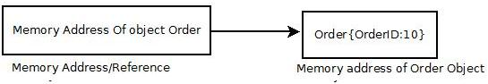

ref keyword in C#
Date: 24-12-2013
Table of Contents
1 What is the use of ref keyword when we are passing reference type as parameter to a function ?
Pass by Reference passes in a reference to a variable - this is effectively the address of the variable into the function. This is more efficient than by value and allows the function to change the variable directly.
2 Then the question arises why (or when) we have to pass a reference type by reference to a function ?
When the reference type is passed by value (i.e. without ref keyword) the value of the reference i.e. the address of the referent(that reference is pointing to) is passed as a parameter. The calling function creates a reference and refer to the value passed by the callee.
2.1 A Reference Type in C#
Example:
Example: class Coffee { public bool ContainMilk { get; set; } public bool ContainSugar { get; set; } public override string ToString() { return string.Format("ContainMilk: {0}, ContainSugar: {1}", ContainMilk, ContainSugar); } } class CoffeeEnricher { public static void AddMilk(Coffee coffee) { //Add Milk //Set the Flag coffee.ContainMilk = true; } public static void AddMilk(ref Coffee coffee) { //Add Milk //Set the Flag coffee.ContainMilk = true; } } class PassByReference { public static void Main() { Coffee myCoffeeReference = new Coffee(); CoffeeEnricher.AddMilk(ref myCoffeeReference); //Reference is passed by refhtmerence Console.WriteLine("Reference is passed by reference"); Console.WriteLine(myCoffeeReference.ToString()); } }
Output: Reference is passed by reference ContainMilk: True, ContainSugar: False
In the Above Example we passed by reference a reference of object coffee
CoffeeEnricher.AddMilk(ref myCoffeeReference); //Reference is passed by reference
It worked fine when Milk in added in AddMilk Method the myCoffeeReference also got changed.
But what if we do not pass the myCoffeeReference by value i.e. without ref keyword.
class PassByReference { public static void Main() { Coffee myCoffeeReference = new Coffee(); CoffeeEnricher.AddMilk(myCoffeeReference); //Reference is passed by value Console.WriteLine("Reference is passed by value"); Console.WriteLine(myCoffeeReference.ToString()); } }
Output: Reference is passed by value ContainMilk: True, ContainSugar: False
It also worked fine. So why we need ref keyword ? Is it only for required in the case of value type? Where we require ref for reference type.
Lets see one more example, we enhance the same class to swap the coffee . So after adding milk in the coffee I didn't like it my friend prepared a coffee and was just going to add milk. I asked him not to add milk and swap the coffee with me. So for swapping I added Two Swap functions in PassByReference class.
First Swap function takes parameters by value.
public static void Swap(Coffee coffeeOneReference, Coffee coffeeTwoReference)
Second one does exactly the same by takes parameter by reference
public static void Swap(ref Coffee coffeeOneReference, ref Coffee coffeeTwoReference)
Extended PassByReference class is as below :
class PassByReference { public static void Main() { .... .... } public static void Swap(Coffee coffeeOneReference, Coffee coffeeTwoReference) { Coffee temp = coffeeOneReference; coffeeOneReference = coffeeTwoReference; coffeeTwoReference = temp; } public static void Swap(ref Coffee coffeeOneReference, ref Coffee coffeeTwoReference) { Coffee temp = coffeeOneReference; coffeeOneReference = coffeeTwoReference; coffeeTwoReference = temp; } }
First we try to swap using first method where we will pass the coffee by value.
public static void Main() { Coffee myCoffeeReference = new Coffee(); Coffee friendsCoffeeReference = new Coffee(); //Without Milk Swap(myCoffeeReference, friendsCoffeeReference); Console.WriteLine("Passed by value"); Console.WriteLine("MyCoffee: {0}{1}FriendsCoffee: {2}", myCoffeeReference, Environment.NewLine, friendsCoffeeReference); }
Output: Passed by value MyCoffee: ContainMilk: True, ContainSugar: False FriendsCoffee: ContainMilk: False, ContainSugar: False
Swap didn't work when we passed the coffeeReferences by value. Let's try by passing by reference.
public static void Main() { Coffee myCoffeeReference = new Coffee(); Coffee friendsCoffeeReference = new Coffee(); //Without Milk Swap(ref myCoffeeReference, ref friendsCoffeeReference); Console.WriteLine("Passed by reference"); Console.WriteLine("MyCoffee: {0}{1}FriendsCoffee: {2}", myCoffeeReference, Environment.NewLine, friendsCoffeeReference); }
Output: Passed by reference MyCoffee: ContainMilk: False, ContainSugar: False FriendsCoffee: ContainMilk: True, ContainSugar: False
hen we passed coffeeReference parameters by reference it worked. But by the when we pass the coffeeReference by value it failed while in the AddMilk method even though we passed coffeeReference by value it worked fine.
Lets go deep into it to under stand it.
When we instantiate a reference type a reference is created on the stack and it point to the managed heap where memory for that instance is allocated.
Coffee myCoffeeReference = new Coffee();

When A reference type parameter is passed by Value When we pass by the reference type by value we pass the the memory location in the heap and a new reference is created in the called function which refer to the existing value in the managed heap .

So in pass by value in case where parameter is of reference type both Caller and Callee refer to same memory location.

When A reference type parameter is passed by Reference. When we pass the reference type by reference we pass the reference and not the memory location in the heap and a new reference is created in the called function which refer to the existing reference and not the managed heap(where memory is allocated) .
So in pass by reference in case where parameter is of reference type Callee refer the reference which in turn refer to the managed heap where (memory is allocated).
So in Case of AddMilk when we passed coffee reference as parameter without ref the (value) managed heap memory location was passed to the callee. The callee created the new reference to the passed managed heap memory location.
So when we changed the value of ContainsMilk in Coffee object changes get affected in the caller also.
But this didn't work with swap.
Internal representation of object orderReference.
 Passed by reference MyCoffee: ContainMilk: False, ContainSugar: False FriendsCoffee: ContainMilk: True, ContainSugar: False

Example:
class PassByReference { public static void Main() { Coffee myCoffeeReference = new Coffee(); CoffeeEnricher.AddMilk(myCoffeeReference); Console.WriteLine(myCoffeeReference.ToString()); CoffeeEnricher.AddMilk(ref myCoffeeReference); Console.WriteLine(myCoffeeReference.ToString()); Console.WriteLine("--x--"); Coffee friendsCoffeeReference = new Coffee(); //Without Milk Swap(myCoffeeReference, friendsCoffeeReference); Console.WriteLine("MyCoffee: {0}{1}FriendsCoffee: {2}", myCoffeeReference, Environment.NewLine, friendsCoffeeReference); Console.WriteLine(""); Swap(ref myCoffeeReference, ref friendsCoffeeReference); Console.WriteLine("MyCoffee: {0}{1}FriendsCoffee: {2}", myCoffeeReference, Environment.NewLine, friendsCoffeeReference); } class Coffee { public bool ContainMilk { get; set; } public bool ContainSugar { get; set; } public override string ToString() { return string.Format("ContainMilk: {0}, ContainSugar: {1}", ContainMilk, ContainSugar); } } class CoffeeEnricher { public static void AddMilk(Coffee coffee) { //Add Milk //Set the Flag coffee.ContainMilk = true; } public static void AddMilk(ref Coffee coffee) { //Add Milk //Set the Flag coffee.ContainMilk = true; } } public static void Swap(Coffee coffeeOneReference, Coffee coffeeTwoReference) { Coffee temp = coffeeOneReference; coffeeOneReference = coffeeTwoReference; coffeeTwoReference = temp; } public static void Swap(ref Coffee coffeeOne, ref Coffee coffeeTwo) { Coffee temp = coffeeOne; coffeeOne = coffeeTwo; coffeeTwo = temp; } }
Internal representation of object orderReference.
2.2 C++ Example
#include <iostream> using namespace std; class Coffee { private: bool _containsMilk; public: Coffee() { _containsMilk = false; } void Out() { cout << "Cofee Object{ ContainsMilk: " << _containsMilk << " }" << endl; } bool GetContainsMilk() { return _containsMilk; } void SetContainsMilk(bool value) { _containsMilk = value; } }; void SwapByPtr(Coffee* paramOne, Coffee* paramTwo) { Coffee* temp = paramOne; paramOne = paramTwo; paramTwo = temp; } void SwapByRef(Coffee& paramOne, Coffee& paramTwo) { Coffee temp = paramOne; paramOne = paramTwo; paramTwo = temp; } void SwapByRefToPtr(Coffee*& paramOne, Coffee*& paramTwo) { Coffee* temp = paramOne; paramOne = paramTwo; paramTwo = temp; } void SwapByVal(Coffee paramOne, Coffee paramTwo) { Coffee temp = paramOne; paramOne = paramTwo; paramTwo = temp; } void SwapByValExample() { cout<< endl << "SwapByValExample" << endl; cout << "Value Before Swap" <<endl; Coffee myCoffee; myCoffee.SetContainsMilk(true); myCoffee.Out(); Coffee refCoffee; refCoffee.SetContainsMilk(false); refCoffee.Out(); SwapByVal(myCoffee,refCoffee); cout << "Value After Swap" <<endl; myCoffee.Out(); refCoffee.Out(); } void SwapByRefExample() { cout<< endl << "SwapByRefExample" << endl; cout << "Reference Before Swap" <<endl; Coffee myCoffee; myCoffee.SetContainsMilk(true); myCoffee.Out(); Coffee refCoffee; refCoffee.SetContainsMilk(false); refCoffee.Out(); SwapByRef(myCoffee,refCoffee); cout << "Reference After Swap" <<endl; myCoffee.Out(); refCoffee.Out(); } void SwapByPtrExample() { cout<< endl << "SwapByPtrExample" << endl; cout << "Ptr Before Swap" <<endl; Coffee* myCoffee = new Coffee(); myCoffee->SetContainsMilk(true); myCoffee->Out(); Coffee* refCoffee = new Coffee(); refCoffee->SetContainsMilk(false); refCoffee->Out(); SwapByPtr(myCoffee,refCoffee); cout << "Ptr After Swap" <<endl; myCoffee->Out(); refCoffee->Out(); } void SwapByRefToPtrExample() { cout<< endl << "SwapByRefToPtrExample" << endl; cout << "Reference Before Swap" <<endl; Coffee* myCoffee = new Coffee(); myCoffee->SetContainsMilk(true); myCoffee->Out(); Coffee* refCoffee = new Coffee(); refCoffee->SetContainsMilk(false); refCoffee->Out(); SwapByRefToPtr(myCoffee,refCoffee); cout << "Reference After Swap" <<endl; myCoffee->Out(); refCoffee->Out(); } int main() { SwapByValExample(); SwapByRefExample(); SwapByPtrExample(); SwapByRefToPtrExample(); return 0; }
Date: 2013-12-25 20:14:16